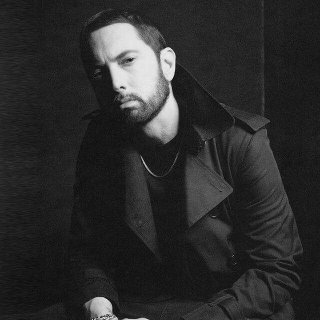
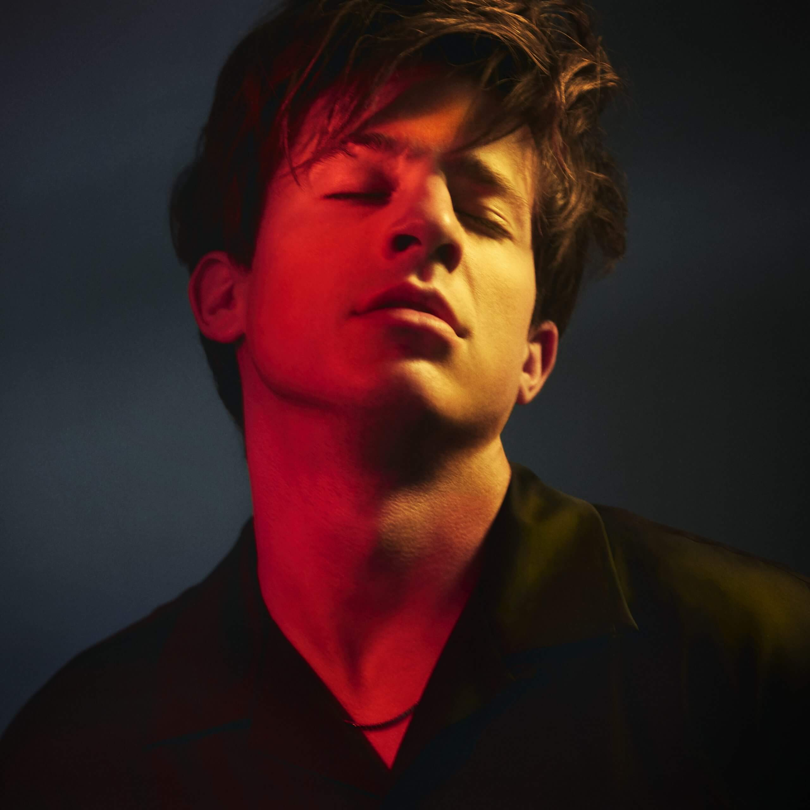
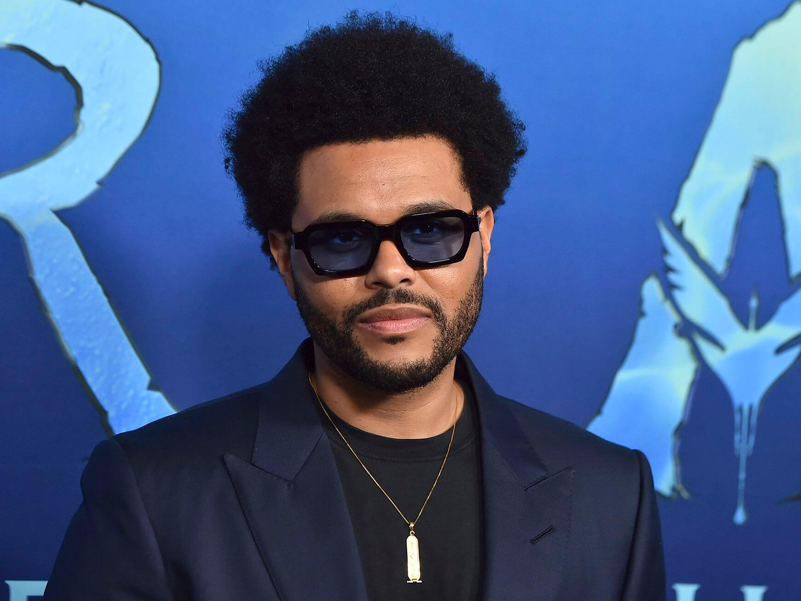

Top 5 singers
-

Eminem
He is credited with popularizing hip hop in middle America and is widely considered as one of the greatest rappers of all time
-

Charlie Puth
Charles Otto Puth Jr. is an American singer and songwriter. His initial exposure came through the viral success of his song videos uploaded to YouTube
-
Billie Eilish
Billie Eilish Pirate Baird O'Connell is an American singer and songwriter. She first gained public attention in 2015 with her debut single "Ocean Eyes"
-

The Weeknd
Abel Makkonen Tesfaye, known professionally as the Weeknd, is a Canadian singer, songwriter, and record producer
-
Ed Sheeran
Edward Christopher Sheeran MBE is an English singer-songwriter. Born in Halifax, West Yorkshire, and raised in Framlingham, Suffolk, he began writing songs around the age of eleven
Eminem
The greatest rapper of all time
Marshall Bruce Mathers III (born October 17, 1972), known professionally as Eminem, is an American rapper, songwriter, and record producer. He is credited with popularizing hip hop in middle America and is widely considered as one of the greatest rappers of all time.Eminem's global success and acclaimed works are widely regarded as having broken racial barriers for the acceptance of Caucasian rappers in popular music. While much of his transgressive work during the late 1990s and early 2000s made him widely controversial, he came to be a representation of popular angst of the American underclass and has been cited as an influence for many artists of various genres.
Top Songs
Charlie Puth
Charles Otto Puth Jr. is an American singer and songwriter
In early 2015, Puth signed with APG/Atlantic and his previous records were removed from iTunes.[34] In February 2015, Puth released his debut single "Marvin Gaye", which features American singer-songwriter Meghan Trainor.[35] The single has been certified 2× Platinum in Australia, topped the charts in New Zealand, Ireland, and the United Kingdom, and peaked at number 21 on the US Billboard Hot 100.[36][37] Puth wrote, co-produced, and was featured on a song with Wiz Khalifa, "See You Again", a tribute to the late Paul Walker, included in the Furious 7 soundtrack. While Khalifa wrote the rap lyrics, the rest of the song has been credited to Puth. The song peaked at number one on the Hot 100 chart for 12 non-consecutive weeks.[38][39] "See You Again" was nominated for three Grammy Awards: Song of the Year, Best Pop Duo/Group Performance and Best Song Written for Visual Media.
Top Songs
Billie Eilish
Billie Eilish has won 10 awards - MTV Video Music Award in 2019, MTV Video Music Award in 2019, MTV Video Music Award in 2019...
Billie Eilish Pirate Baird O'Connell born December 18, 2001 is an American singer and songwriter. She first gained public attention in 2015 with her debut single "Ocean Eyes", written and produced by her brother Finneas O'Connell, with whom she collaborates on music and live shows. In 2017, she released her debut extended play (EP), titled Don't Smile at Me. Commercially successful, it reached the top 15 of record charts in numerous countries, including the US, UK, Canada, and Australia.
Top Songs
The Weeknd
Abel Makkonen Tesfaye ( born February 16, 1990), known professionally as the Weeknd, is a Canadian singer, songwriter, and record producer
Tesfaye earned critical and commercial success with his pop-leaning second album Beauty Behind the Madness (2015), which reached number one in the US, contained the US Billboard Hot 100 chart-topping singles "Can't Feel My Face" and "The Hills", and won the Grammy Award for Best Urban Contemporary Album and was nominated for Album of the Year.[8] His trap-infused third album Starboy (2016) saw similar commercial success and included the US number-one single of the same name and "Die for You", and won the Grammy Award for Best Urban Contemporary Album.
Top Songs
Ed Sheeran
Edward Christopher Sheeran MBE (/ˈʃɪərən/; born 17 February 1991) is an English singer-songwriter. Born in Halifax, West Yorkshire, and raised in Framlingham, Suffolk, he began writing songs around the age of eleven
Sheeran's debut album, + ("Plus"), was released in September 2011 and topped the UK Albums Chart. It contained his first hit single "The A Team". In 2012, Sheeran won the Brit Awardsfor Best British Male Solo Artist and British Breakthrough Act. Sheeran's second studio album, × ("Multiply"), topped charts around the world upon its release in June 2014. It was named the second-best-selling album worldwide of 2015